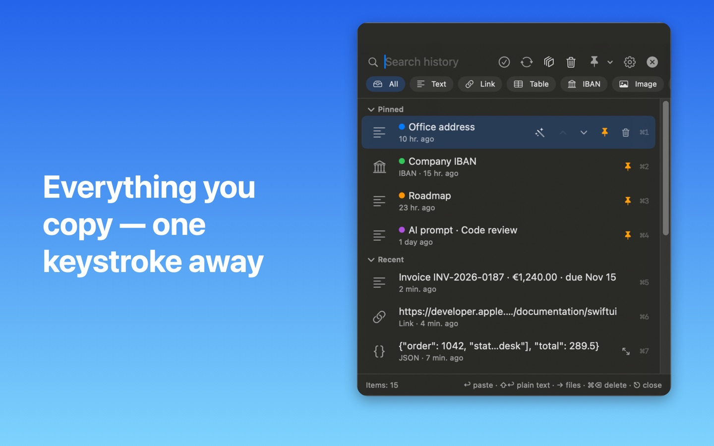
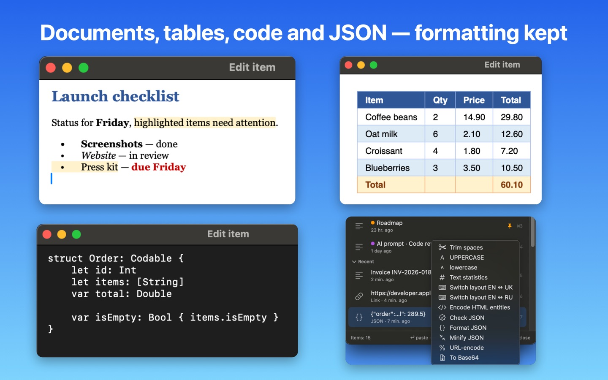
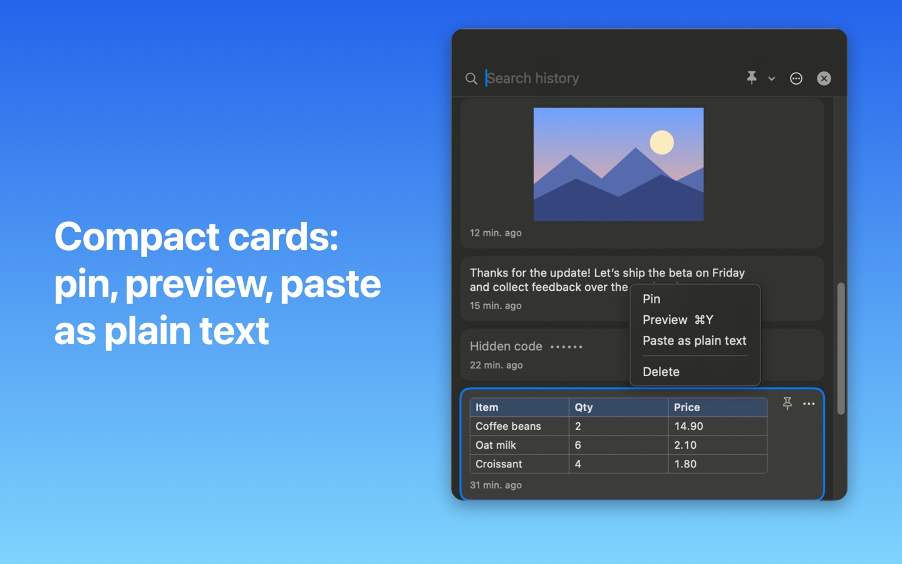
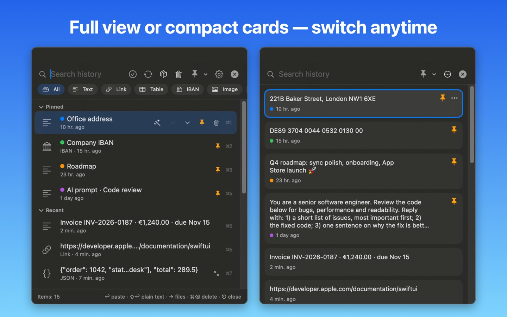
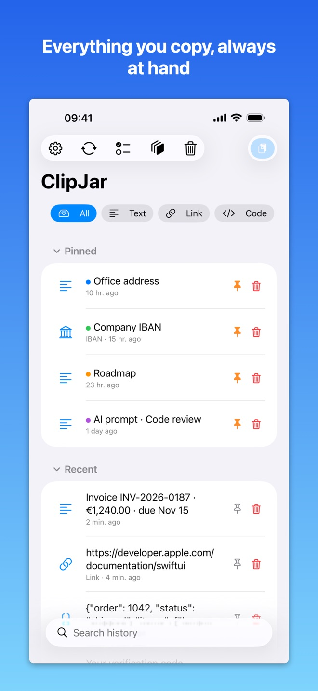
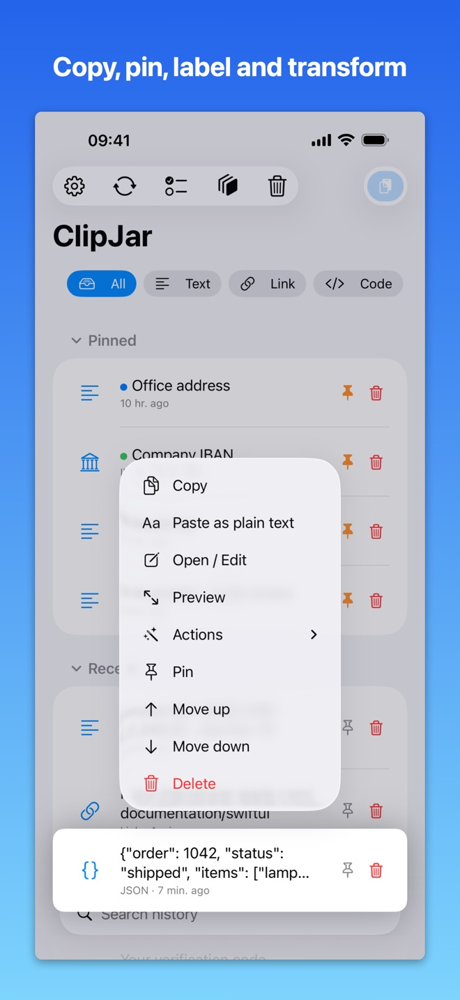
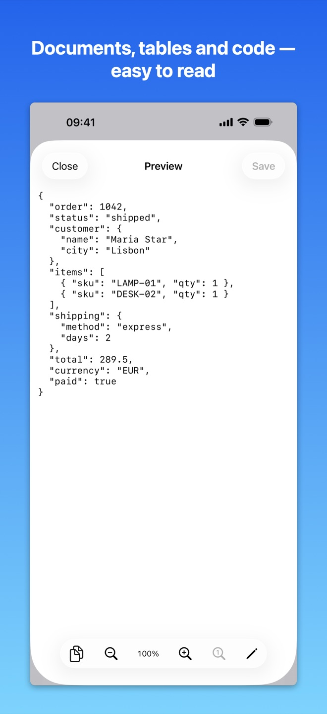
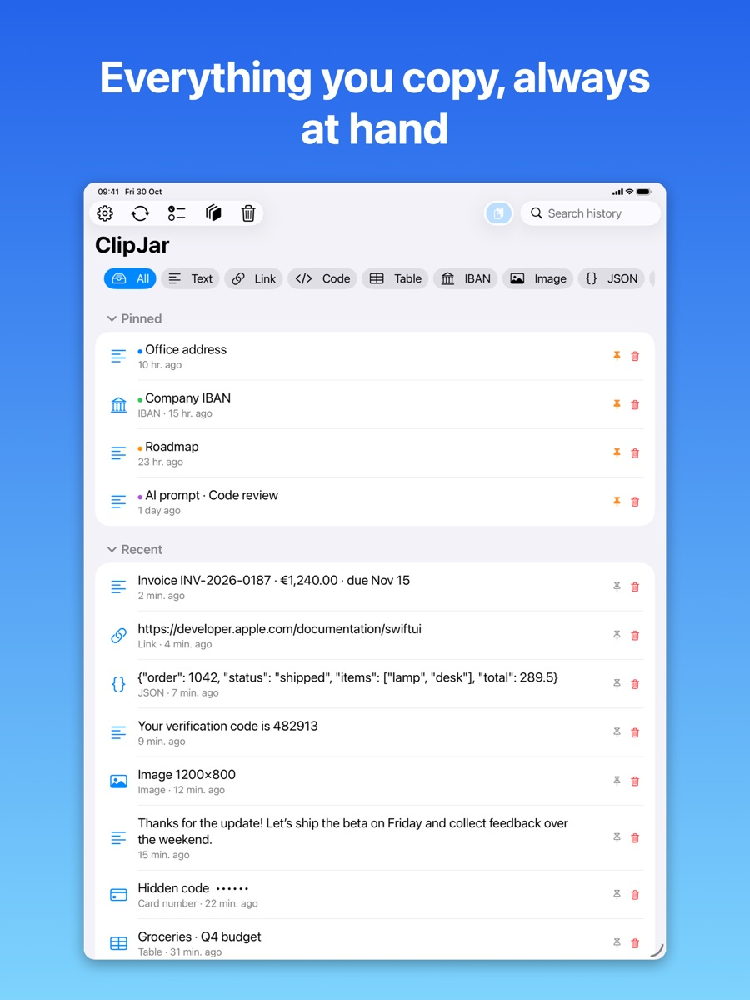
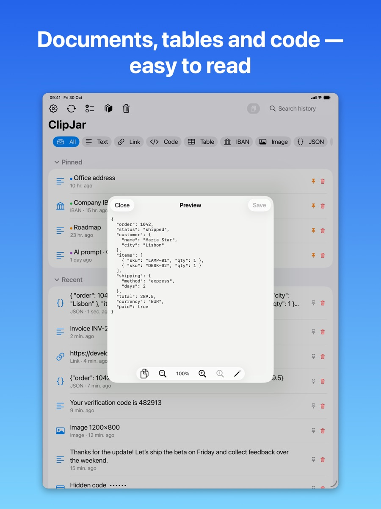

Tudo o que você copia,
a uma tecla.
O ClipJar guarda o histórico da área de transferência — texto, links, imagens, código e arquivos — e devolve tudo em um segundo. Sem conta. Sem servidores na nuvem. Sem rastreamento.
Rápido
⌥⌘V, digite algumas letras, Return. No iPhone, toque para copiar ou use o teclado ClipJar.
Saiba mais ›Privado
Funciona totalmente offline. O histórico é criptografado no aparelho. Senhas, códigos e números de cartão ficam ocultos e nunca são sincronizados.
Saiba mais ›Todos os seus aparelhos
Sincronização opcional entre Mac, iPhone e iPad pela sua pasta do iCloud Drive, criptografada com a sua senha.
Saiba mais ›Organizado
Fixados, etiquetas coloridas, filtros por tipo, lixeira com restauração, seleção múltipla e desfazer.
Saiba mais ›Ações inteligentes
Limpar espaços, maiúsculas/minúsculas, corrigir texto embaralhado, trocar o layout do teclado, URL/HTML/Base64, texto de imagens.
Saiba mais ›Simples quando quiser
Com o perfil “Mínimo”, o ClipJar é só busca, lista e colar. 14 idiomas.
Saiba mais ›Veja em ação




No iPhone e iPad





Grátis para começar. Pro uma vez, para sempre.
As funções básicas são grátis. O ClipJar Pro é uma compra única — $3.99 — para todos os seus Mac, iPhone e iPad. Sem assinatura.